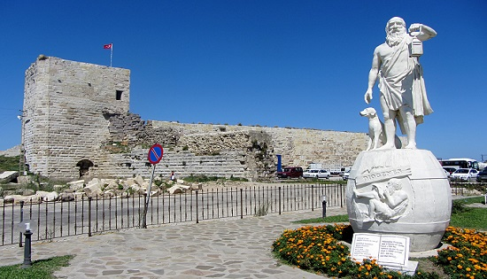

Childhood

Family
Hicesias was the banker that fathered Diogenes. He also held the position of mintmaster in Sinope.
Source

Crimes and Expulsion
Either Diogenes or his father would debase Sinopean currency. It is beleived that this was for political gain as opposed to monetary gain due to the Persian and Greek faction dispute.
Source